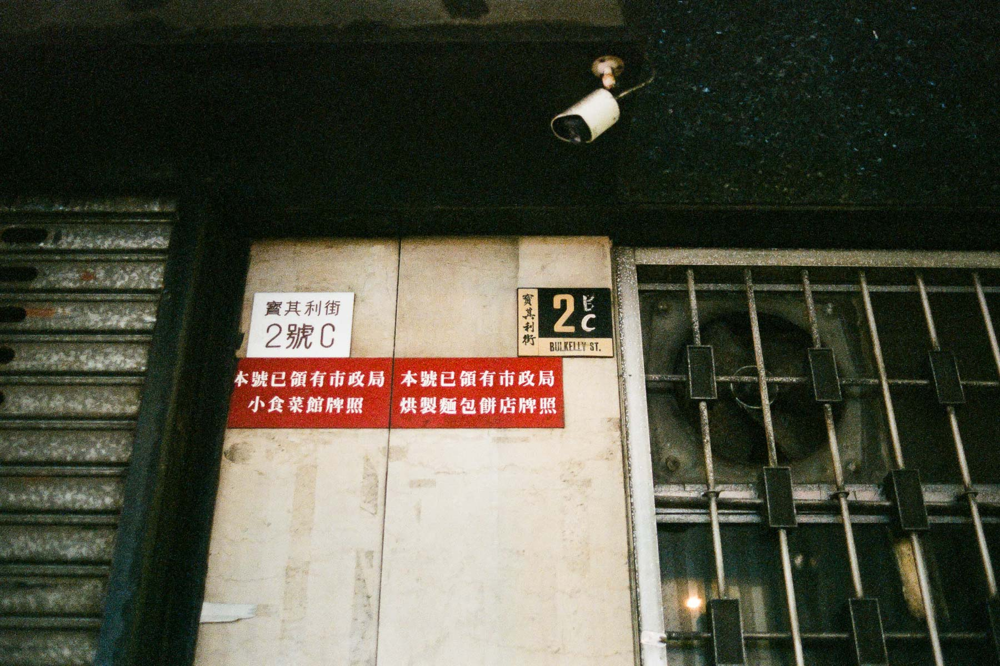
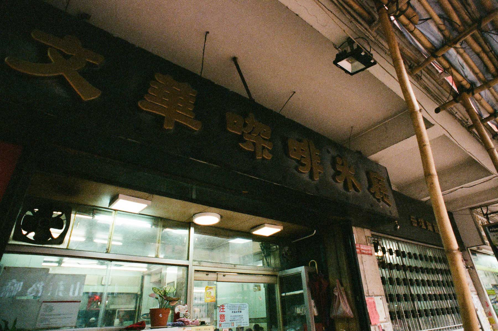
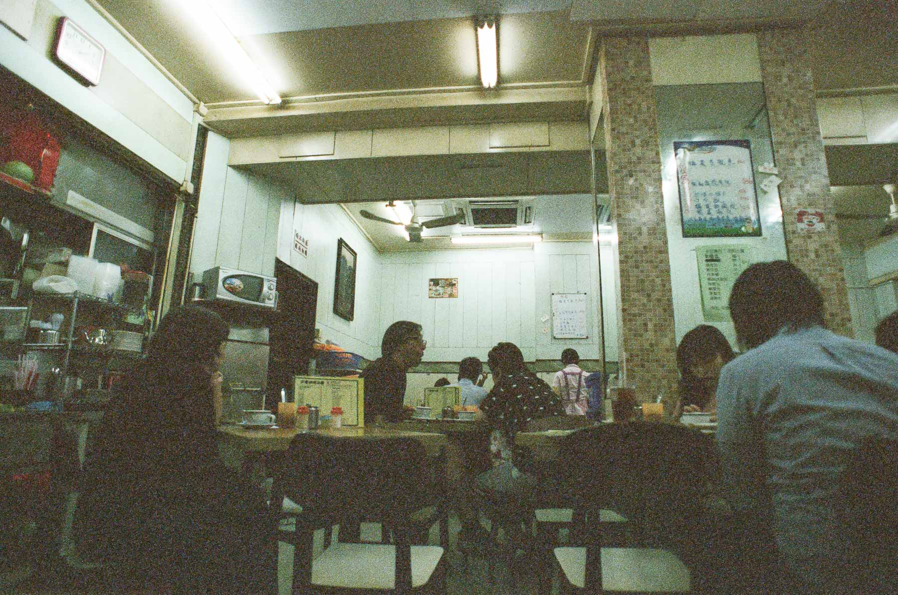
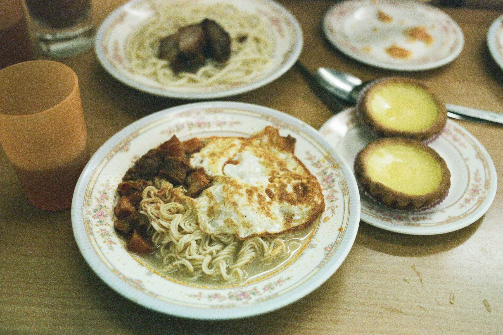
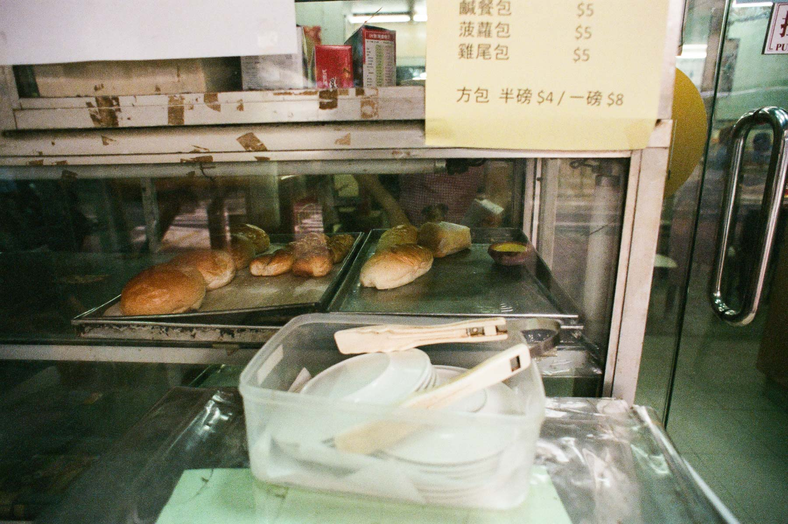
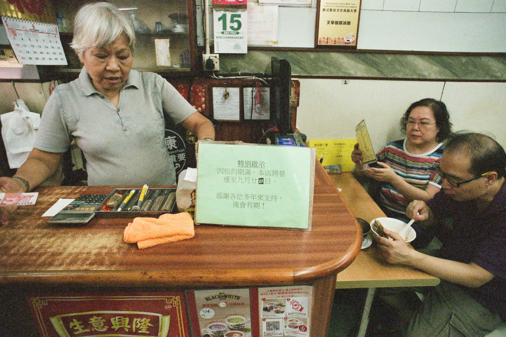

讀小學時家住紅磡家維邨，我的記憶力不是很好，對於這一段時間的記憶零星，但有一種食物卻一直留在腦海裏：奶醬多，重要喺上面加砂糖。砂糖奶醬多呢種食法應該係爺爺嫲嫲傳給我的，細個通常會去兩個地方食：一是紅磡大牌檔（現在紅磡消防局旁的公園）、二是在寶其利街的文華咖啡冰廳。

上月尾得知文華咖啡冰廳將營業至九月尾結業，原來文華已經經營超過半世紀，真是非常可惜。後來從報紙得知因為業主要收舖所以被迫結業，傳媒報導老闆激動，做到無晒心機，雖然我作為食客覺得可惜，但對老闆來說可能是放下心頭大石，未嘗唔係好事。

中學時代搬離紅磡後，不是有很多機會重返舊地，反而入了大學之後，對這類有西餅食的冰室/茶餐廳有極大興趣，差唔多每次去紅磡都要來念一念舊，每次走進文華都像入了時光隧道一樣，看著半世紀不變的格局和裝修，細味兒時回憶。


文華咖啡冰廳將於九月廿四日結業，上星期五特意去食最後一次，淡淡地懷念這個童年時家庭樂的地方。


